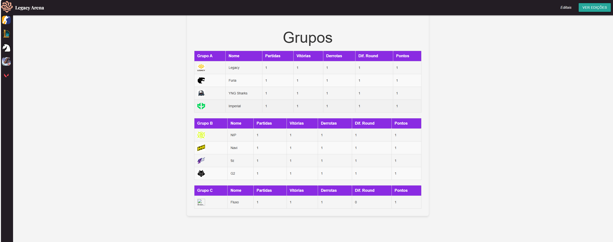
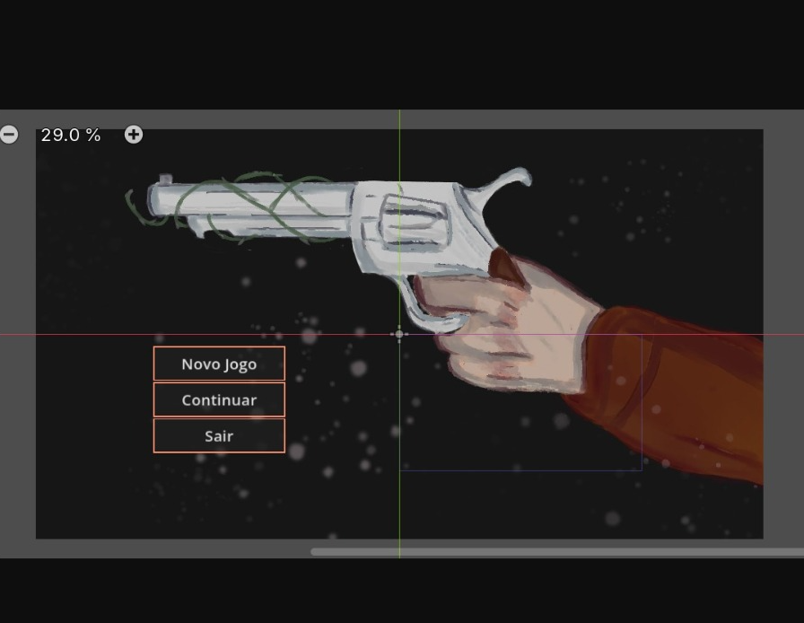

Dados Pessoais
- Luciano Maia Kubner
- 19 anos
- Uruguaiana — RS
Formação Acadêmica
- Curso de Office — HiperCursos (2020–2021)
- Técnico em Informática — IFFar (2022–2025)
- Análise e Desenvolvimento de Sistemas — IFFar (2025–Atualmente)
Projetos
-
-
